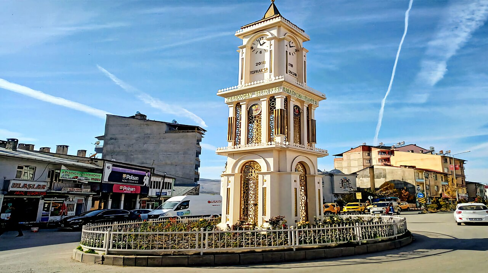
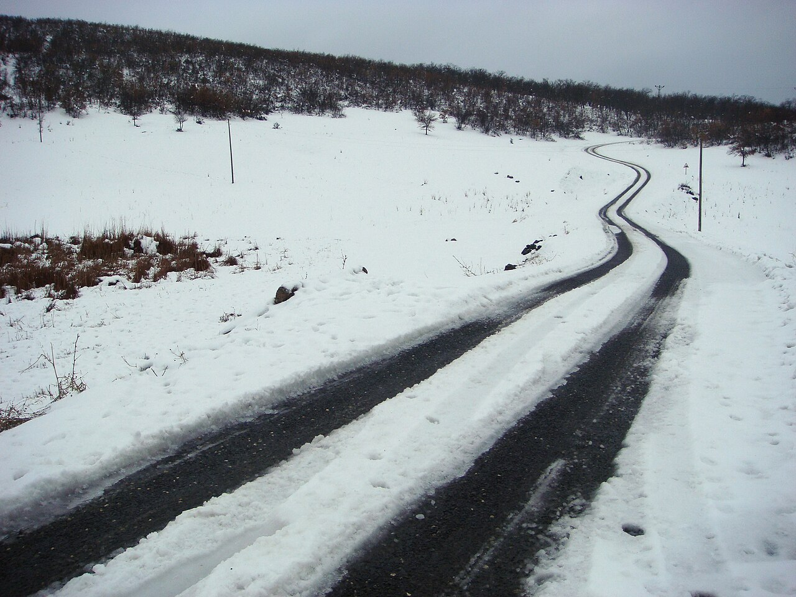
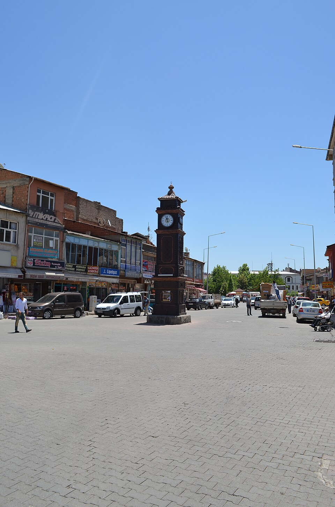
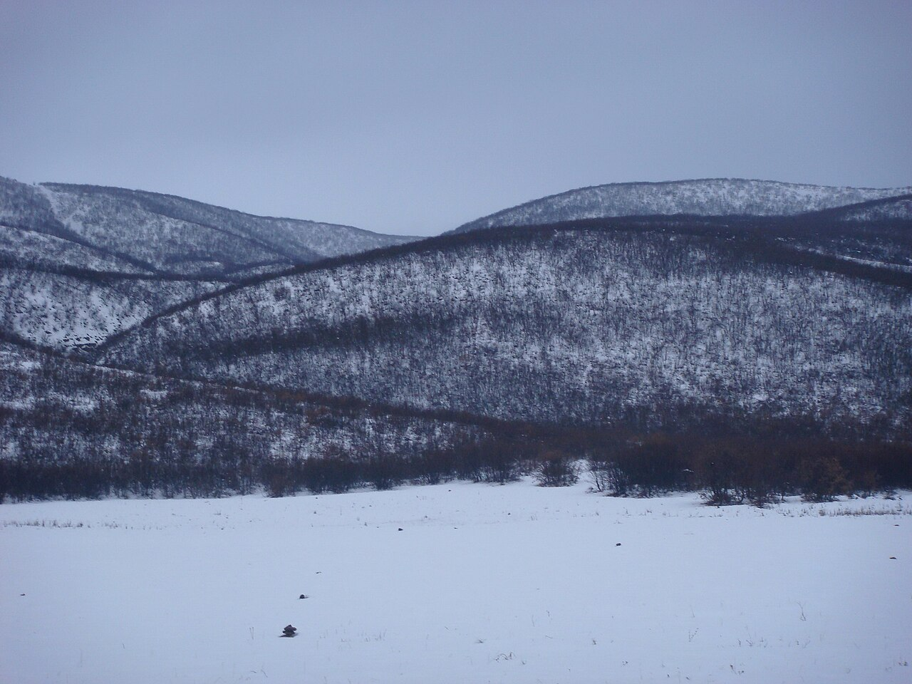
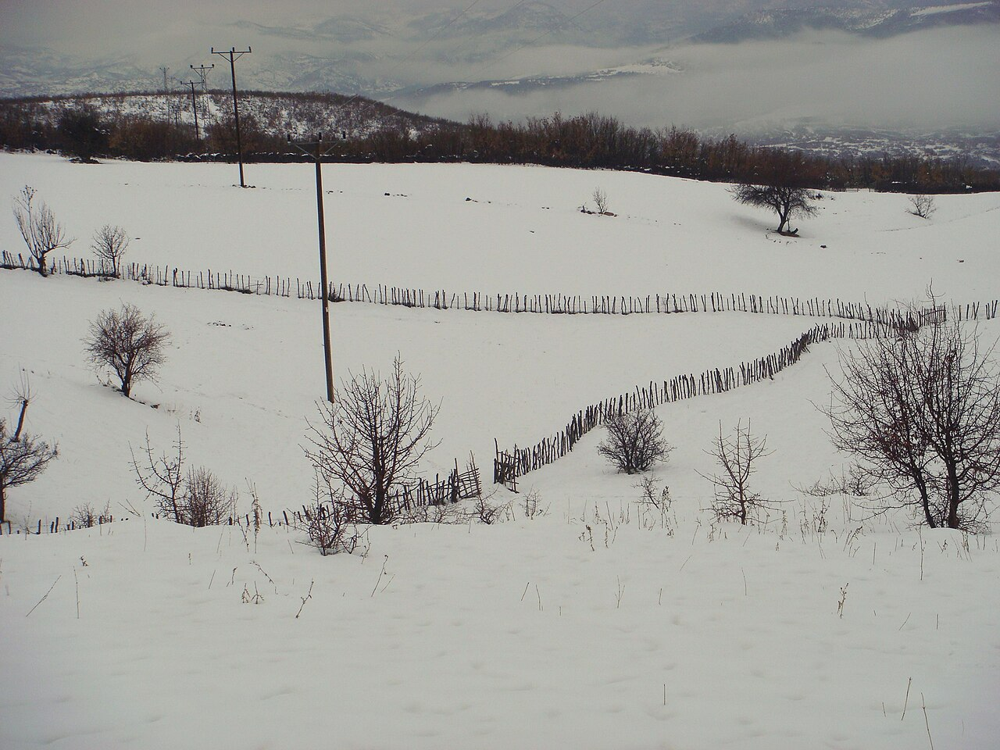

Foto: LoqaT · CC BY-SA 4.0Karakoçan — Haber ve Arşiv
Gündem
Tümünü gör
KöylerKöy yollarında kış hazırlığı için ortak çağrı
Muhtarlar ve dernekler, karla kapanan yolların hızlı açılması için birlikte başvuru yapıyor.

Karakoçanİlçe merkezinde hemşehri buluşması yapıldı
Yaz boyunca memlekete gelen gurbetçi aileler saat kulesi meydanında bir araya geldi.

DoğaKarakoçan dağlarında kış yürüyüşü rotaları
Gençlik kolunun hazırladığı rehber, köyler arası eski patikaları yeniden tanıtıyor.
2026–2027 dönemi burs başvuruları açıldı; son gün 30 Kasım
Üniversite ve lise öğrencileri başvurularını çevrim içi yapabilecek. Sonuçlar aralık sonunda açıklanacak.
Etkinlik takvimi
-
7KasımCumartesi
Kış yardımı kampanyası başlıyor
Karakoçan · 10:00
KAR-DEF -
14KasımCumartesi
Memleket akşamı: müzik, yemek, sohbet
Köln · 18:30
AV-KARDEP -
22KasımPazar
Federasyon olağan genel kurulu
Karakoçan · 10:30
KAR-DEF -
5AralıkCumartesi
Atölye: aile fotoğraflarını dijitale aktarma
Çevrim içi · 20:00
Ortak
Arşiv
Yetmiş yılın kayıtları
Fotoğraflar, belgeler, gazete kupürleri ve sözlü tarih kayıtları. Bir dönem seçin, arşiv o yıllara göre süzülsün.
Tüm dönemler · 511 kayıtArşivin tamamını aç
+Fotoğraf gönder
Bu döneme ait fotoğraf arıyoruz
Harman, düğün, okul günleri… Elinizde varsa gönderin.
Almanya'dan köye gönderilen ilk mektuplar
Aile arşivinden · 6 sayfa
Köy ilkokulundan bir karne ve diploma
Bağışlayan: bir hemşehrimiz
Bölge gazetesinde Karakoçan haberi
Gazete arşivinden
38:12Kasetten aktarılan ninniler ve ağıtlar
Kaset kaydı, dijitale aktarıldı

Kışın köy tarlaları ve eski çitler
Veyis Polat · CC BY 2.0
+Fotoğraf gönderBu döneme ait fotoğraf arıyoruz
Harman, düğün, okul günleri… Elinizde varsa gönderin.
Karlı tepeler, köy yolu üzerinden
Veyis Polat · CC BY 2.0
52:40Gurbete ilk gidenler anlatıyor
Sözlü tarih projesi
Saat kulesi ve ilçe meydanı
LoqaT · CC BY-SA 4.0
Duyurular
Tüm duyurularKöy rehberi
Her köyün kendi sayfası var: tarihçesi, fotoğrafları, haberleri ve gurbetteki aileleri.
Kurumlarımız
KAR-DEF
Elazığ Karakoçan Dernekleri Federasyonu
Karakoçan'ın derneklerini tek çatı altında buluşturan federasyon. Dayanışma, eğitim ve kültürel mirasın korunması için çalışıyor.
- Kuruluş
- 2010
- Merkez
- Elazığ
AV-KARDEP
Avrupa Karakoçan DEP Dayanışma Platformu
Avrupa'da yaşayan Karakoçanlıları bir araya getiren dayanışma platformu. Gurbetle memleket arasındaki bağı güçlendiriyor.
- Kuruluş
- 2023
- Merkez
- Avrupa
Sandıkta eski bir fotoğraf mı var?
Albümde, sandıkta ya da telefonunuzda duran her fotoğraf, mektup ve belge ortak hafızamızın parçası. Gönderin, künyesini yazıp arşive ekleyelim. Asılları sizde kalır.
Arşive gönderMemleketten haberler, haftada bir.
Haberler, etkinlikler ve duyurular e-postanıza gelsin.
WhatsApp kanalına katılın